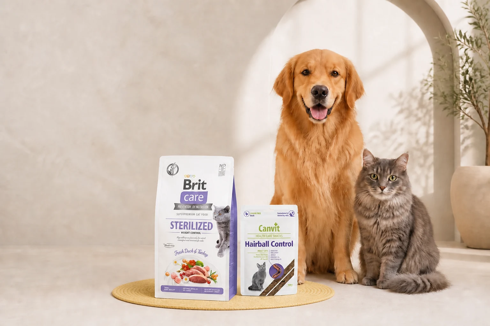
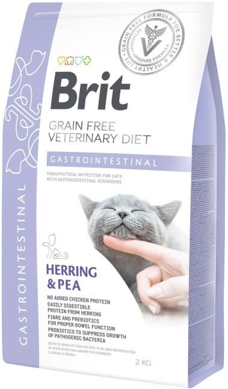
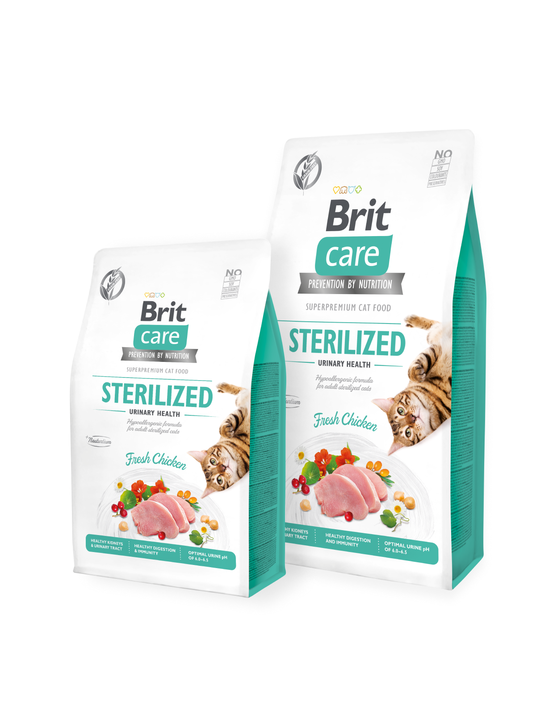

♡
Искренняя забота
Решения для ежедневного здоровья и благополучия домашних животных.
Корма и полезные лакомства для кошек и собак — на каждый день и для особых потребностей.
Эксклюзивный партнёр VAFO GroupЧехия · официально в Казахстане

Начните с категории, а затем учитывайте возраст, особенности здоровья и назначение рациона.
Ежедневное питание, стерилизация, контроль веса и особые потребности.
Корма для разных возрастов, пород и индивидуальных особенностей.
Полнорационный корм для регулярного питания.
Рационы с учётом контроля веса и мочевыделительной системы.
Специальные продукты с тщательно подобранным составом.
Вкусное дополнение к основному рациону питомца.
Корма и лакомства для ежедневного рациона и особых потребностей кошек и собак. Эксклюзивный партнёр VAFO Group (Чехия) в Казахстане.

Рацион при чувствительном пищеварении · 2 кг

Корм для стерилизованных кошек · 7 кг
Полезные добавки и товары для ухода за питомцами — весь ассортимент собственного бренда в одном месте.
Оригинальные корма, добавки и полезные лакомства для ежедневной заботы о кошках и собаках.
Оригинальные товарыПроверенный ассортимент
Доставка от одного дняТочный срок показывает Kaspi
Удобный заказОплата и доставка через Kaspi
Помощь с выборомСвязь с продавцом в Kaspi
История ProstoPets и EBS Consulting
Бренд ProstoPets родился из идеи сделать заботу о домашних животных в Казахстане технологичной и искренней. Чтобы превратить эту концепцию в сильную экосистему, к проекту присоединилась команда EBS Consulting.
Эксперты разработали модель устойчивого роста и заложили высокие стандарты сервиса, объединив любовь к питомцам с эффективным бизнесом.
Важнейшей вехой стало международное партнёрство с VAFO Group — крупнейшим европейским концерном и лидером в производстве суперпремиальных рационов. Мы убеждены: питомцы в Казахстане достойны оригинальной продукции высокого качества.
Благодаря аналитике и сильной позиции EBS Consulting компания получила эксклюзивные права на дистрибуцию оригинальной продукции VAFO с фокусом на рынок Казахстана. Этот альянс объединил европейские технологии, бизнес-экспертизу EBS и подход ProstoPets, обеспечивая защиту от фальсификата и доступ к продуктам премиального уровня.
Решения для ежедневного здоровья и благополучия домашних животных.
Устойчивая модель развития и высокие стандарты сервиса.
Европейский опыт производства суперпремиальных рационов.
Эксклюзивная дистрибуция и защита покупателей от фальсификата.
★★★★★«Корм хороший, беру второй раз, кошки едят. До этого брала маленькую пачку, эта пачка очень большая, недели на 3 хватит для двоих.»
★★★★★«Корм с хорошим составом и сроком годности. До этого брала 2 кг упаковку, едят хорошо. Пока наблюдаю за стулом, так как после грандорф этот как будто слабит (не понос). Надеюсь, что со временем это пройдёт и корм будет постоянным. Продавцу спасибо за доставку.»
Не нашли ответ? Напишите нам — поможем выбрать.
Корма и лакомства доступны в официальном магазине PROSTOPETS на Kaspi.kz. Нажмите кнопку «Купить» рядом с выбранным товаром — откроется его страница в Kaspi Магазине.
Учитывайте вид питомца, возраст, вес, особенности здоровья и назначение рациона. Описание и состав указаны в карточке товара. Если питомцу требуется специальная диета, рекомендуем заранее проконсультироваться с ветеринарным врачом.
Доставка возможна от одного дня. Точный срок зависит от вашего города, наличия товара и выбранного способа получения — Kaspi покажет актуальную дату перед оформлением заказа.
В настоящий момент возврат кормов и лакомств не предусмотрен. Пожалуйста, проверяйте название, вес упаковки и состояние товара при получении. Если заказ пришёл повреждённым или не соответствует заказанному, сразу свяжитесь с нами через Kaspi — мы обязательно поможем разобраться.
Нужна помощь с выбором корма, составом или заказом? Посмотрите весь ассортимент PROSTOPETS в Kaspi Магазине. Чтобы написать продавцу, откройте подходящий товар и выберите «Сообщение».
Все товары — в нашем официальном магазине на Kaspi.
Перейти в магазин